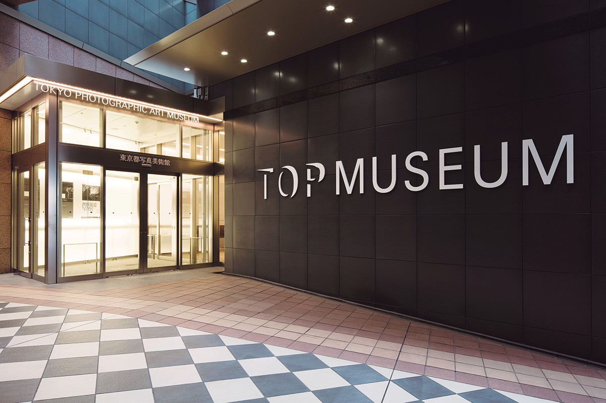
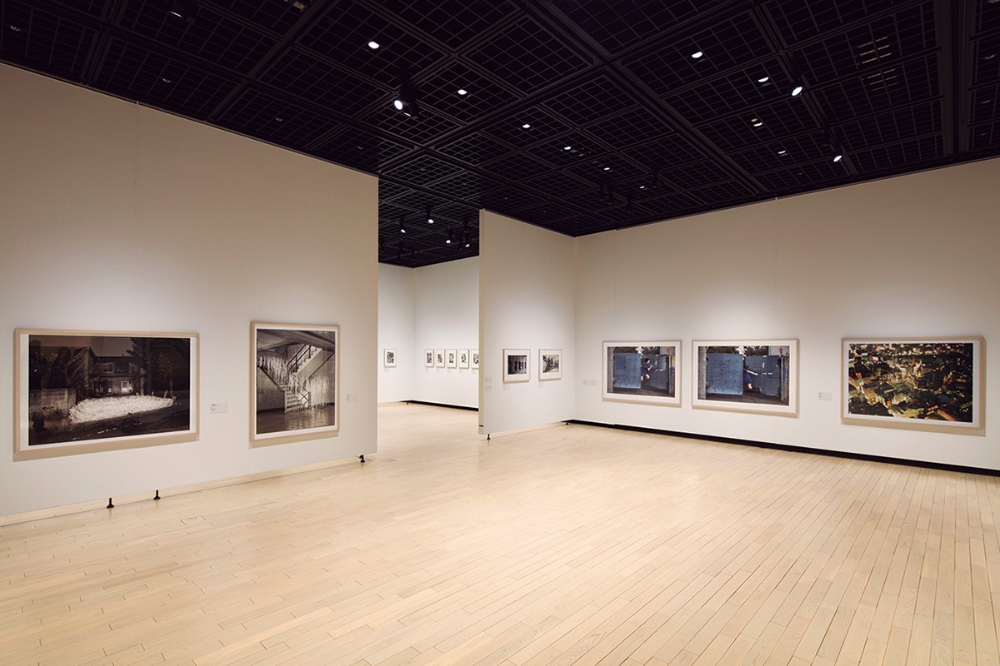
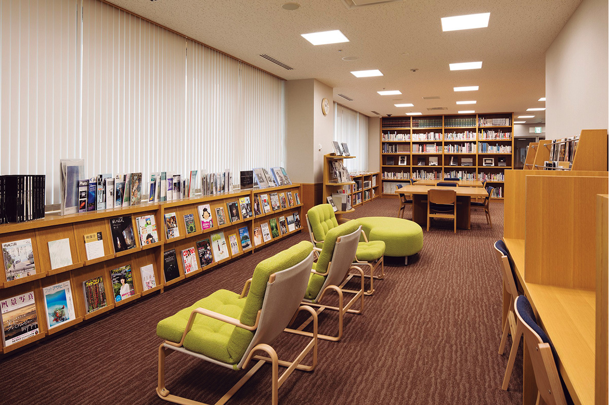
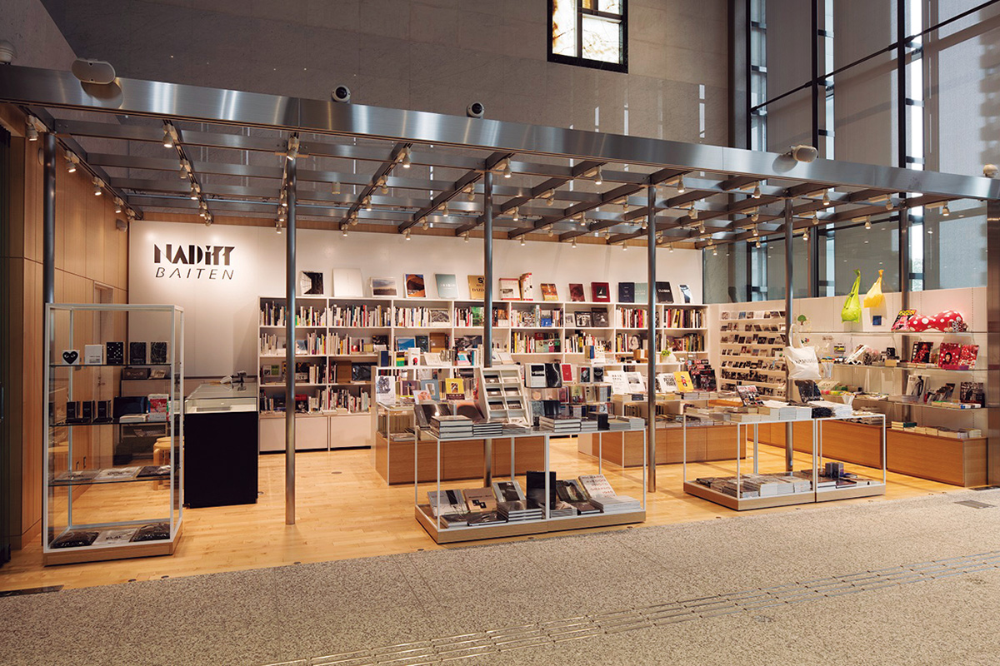
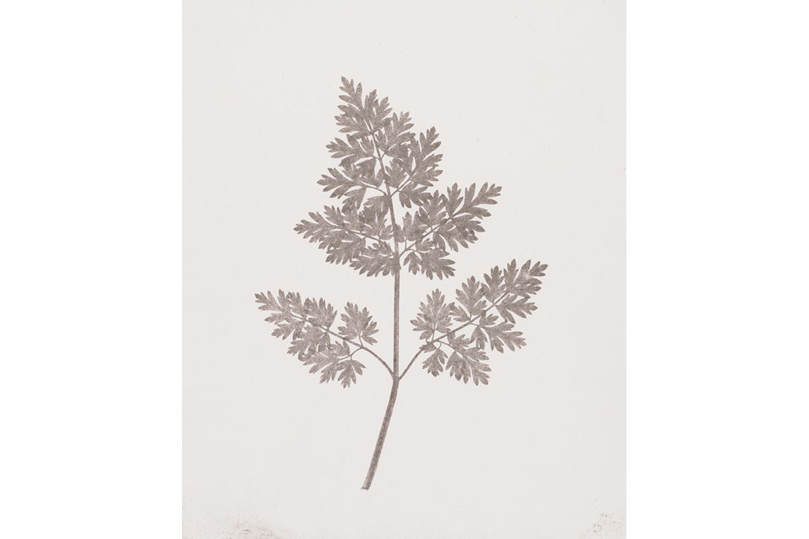

Токио · Эбису · музей
Токийский музей фотографии в Эбису: первый в Японии публичный музей снимков и видео

В Токио много музеев на любой вкус, и смотреть в них можно не только работы, но и архитектуру, и сады. Токийский музей фотографии в Эбису стал первым в Японии публичным музеем, который занимается только фотографией и видео.
Музей
Снимки, которые редко покидают хранилище
Токийский музей фотографии полностью открылся в 1995 году. Он стоит в квартале «YEBISU GARDEN PLACE» и с самого начала привлёк внимание как первый в Японии музей, целиком посвящённый фотографии и видео. Ценное собрание и разнообразные выставки принесли ему высокую репутацию.

С тех пор музей устраивает около 20 выставок в год самых разных жанров: персональные выставки известных японских и зарубежных фотографов, новые видеоработы и многое другое. Оригинальный отпечаток повреждается легче, чем живописное полотно, поэтому увидеть его в хороших условиях удаётся нечасто. Здесь же снимки можно рассматривать спокойно и подолгу.
Библиотека
Сто десять тысяч книг на четвёртом этаже
На четвёртом этаже работает специальная библиотека, в которой больше 110 000 томов. Бесплатно можно полистать фотоальбомы, которые давно не переиздаются, и все номера американского фотожурнала LIFE. Кроме того, в музее есть кинозал и магазин, так что в один визит легко уместить несколько разных занятий.


Экспонат
Лист растения без фотоаппарата

Одна из гордостей собрания связана с самым началом фотографии. Британский изобретатель Уильям Генри Фокс Тальбот (1800–1877), один из создателей фотографии на бумаге, в 1839 году представил свой метод. Листья, птичьи перья и кружево он клал на бумагу, пропитанную светочувствительным составом, и выставлял на солнце. Так получались первые в мире снимки, сделанные без фотоаппарата.
Альбом Тальбота «Карандаш природы» считают первым фотоальбомом в мире. Полных комплектов было выпущено всего около десяти, и один из них хранится в этом музее. Он не входит в постоянную экспозицию, поэтому увидеть его можно не в каждый визит.
Токийский музей фотографии
- Адрес
- Токио, Мэгуро, Мита, 1-13-3, квартал «YEBISU GARDEN PLACE»
- Телефон
- +81 3-3280-0099
- Часы работы
- 10:00–18:00, в четверг и пятницу до 20:00 (вход за 30 минут до закрытия)
- Выходные
- понедельник (если праздник, то следующий рабочий день), новогодние дни, дополнительные дни закрытия
- Цены / Вход
- зависит от выставки или показа
- Как добраться
- около 7 минут пешком от станции Эбису (линия JR Яманотэ и другие). Парковки нет.
- Сайт
- topmuseum.jp